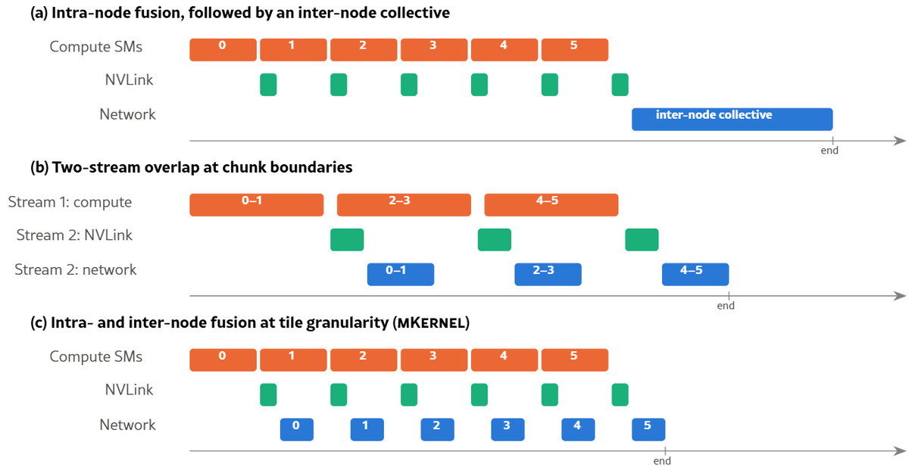
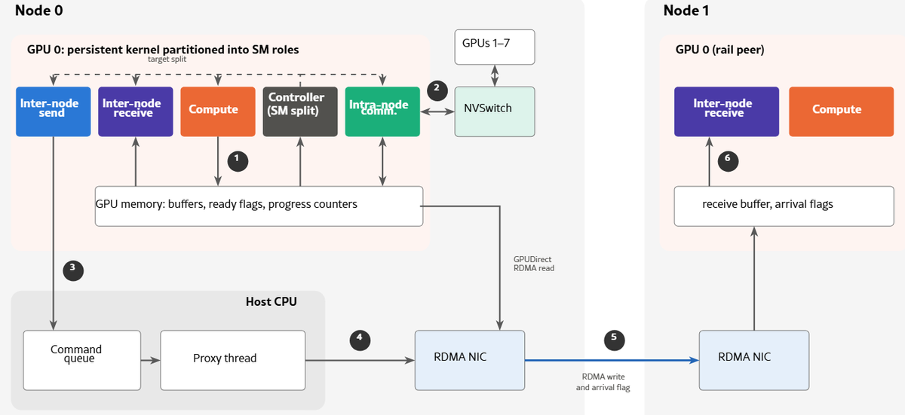
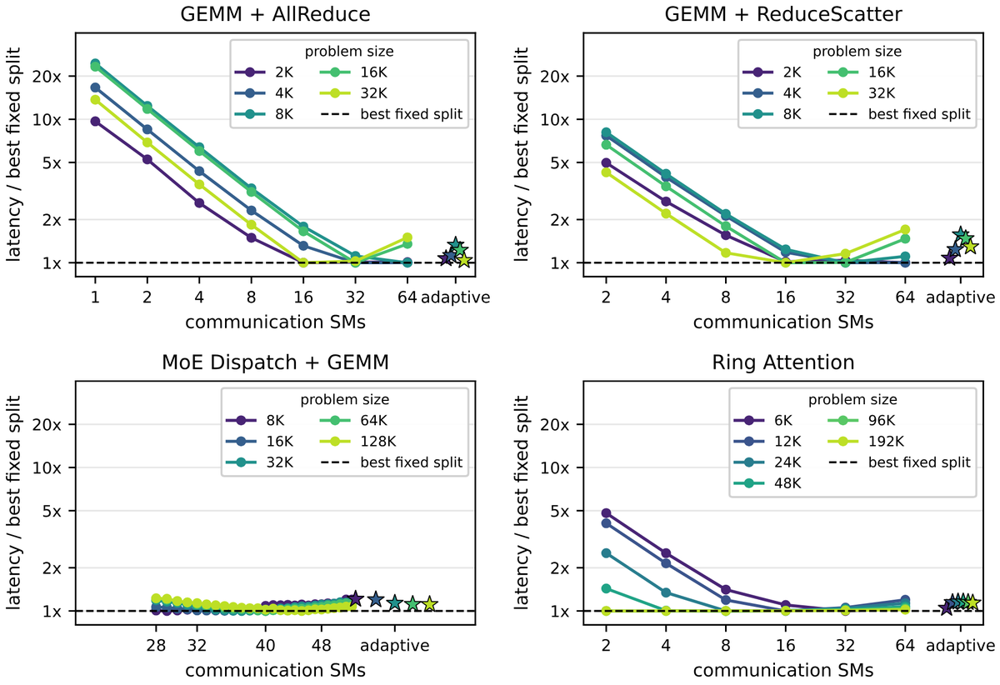
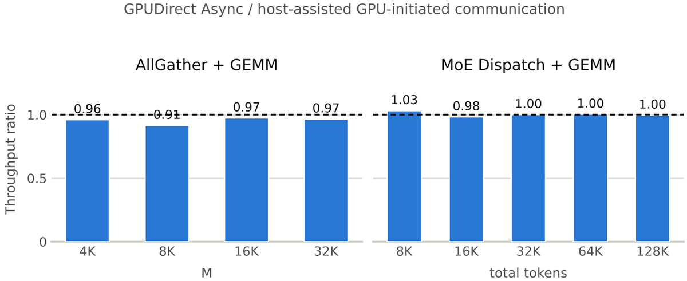

通信已经是大模型训练和推理的主要开销。mKernel把计算、节点内NVLink传输和跨节点RDMA放进同一个持久内核，让三者在tile粒度上彼此重叠，而不是各跑各的。
大模型训练和推理要么把模型层切开，要么把输入序列切开，摊到很多张GPU上，这就是张量并行、序列并行和专家并行。在生产环境的混合专家（MoE）训练里，通信占前向计算的43.6%、占端到端训练时间的32%；在主流MoE模型和框架中，设备间通信最多能吃掉47% 的执行时间。
这个失衡还在扩大。加速器算力的涨速快过网络带宽：一台GB300 NVL72机柜能提供720 PFLOP/s的FP8算力，但机柜里每张GPU只有一块400到800 Gb/s的网卡通向外部。
以往的工作在不同粒度上重叠计算与通信。节点内融合可以让计算和本地传输重叠，跨节点通信仍然交给一次独立的集合通信，见图1(a)。双流流水线会把已算完的chunk发出去，同时继续算后面的chunk，但每个chunk只能在自己的kernel边界释放，见图1(b)。tile级融合更进一步，把tile的就绪状态暴露到内核内部，换来更细的重叠。
这些工作大多局限在单节点，而且不少系统只融合了计算、节点内通信、跨节点通信中的某几段，剩下的仍然单独执行。mKernel把三者都塞进一个融合内核，统一协调三个阶段的tile级进度，见图1(c)。

把融合扩展到跨节点，比在单节点内融合难得多。在我们的集群上，跨节点网络给到每张GPU的带宽大约只有NVLink的九分之一，两级链路不能一视同仁。网卡是独立的PCIe设备，有自己的工作队列，GPUDirect Async还要求网卡的工作队列能被GPU直接访问。各家的传输语义也不一样：InfiniBand的可靠连接会按序送达RDMA写，而AWS EFA的可扩展可靠数据报（SRD）不保证顺序，跟在数据后面写的完成标志可能比数据先可见。节点内通信和跨节点通信都要占用SM，而SM还要跟计算抢。
我们用了两个独立集群，一个节点间走InfiniBand，一个走AWS EFA，见表1。两个集群的节点内都是8张GPU通过NVLink和NVSwitch互联。跨节点带宽明显低于节点内。节点内的tile抽象、异步传输和通信原语，ThunderKittens和ParallelKittens已经提供了；跨节点则靠GPUDirect RDMA让网卡直接在GPU显存之间搬数据。剩下的问题是，这些路径的带宽差了一个量级，内核却必须同时给计算、本地通信和网络协调分配SM。
表1：两个独立H200集群的通信层级：一个走InfiniBand（IB），一个走AWS EFA。两者共用表中列出的GPU内部与节点内层级。跨越节点边界会改变由哪些SM协调数据搬运。NVLink和网络带宽都是每张GPU、每个方向的数值。
| 层级 | 链路 | 带宽 | SM角色 | 传输机制 |
|---|---|---|---|---|
| GPU内部 | HBM3e | 4.8 TB/s | 计算 | load/store、TMA |
| 节点内 | NVLink + NVSwitch | 450 GB/s | 本地通信 | TMA、NVSwitch |
| 跨节点（IB） | InfiniBand（CX7） | 50 GB/s | 发送与接收 | 网卡RDMA |
| 跨节点（EFA） | AWS EFA（SRD） | 50 GB/s | 发送与接收 | 网卡RDMA |
tile级融合把计算与通信的重叠做到了内核内部：算出一个输出tile就立刻可以参与通信，输入tile一到就可以参与计算。FLUX把通信塞进GEMM的epilogue、把就绪检查塞进prologue，还支持通过NVSHMEM做跨节点写。Comet和MegaScale-MoE把细粒度重叠用到MoE负载上。TileLink、Triton-distributed和Mercury则把计算与通信暴露成编译器原语。
SM分配是核心权衡。 设一张GPU有S个SM，其中S_c个分给通信。如果计算吞吐大致随计算SM数变化，且三个阶段在稳态下重叠，执行时间可以近似写成：
T_fused ≈ max( T_compute × S / (S - S_c), T_NVLink, T_network ) + T_fill/drain + T_sync
其中T_compute是全部S个SM都用于计算所需的时间，传输时间取决于选定的分配方案，最后两项是流水线的填充与排空以及同步开销。核心权衡在于：给通信多分SM能缩短通信时间，但会拖慢计算。
从这个观察出发，mKernel选择自适应地分配SM，并用分层通信把T_network压下去。
C1节点内与跨节点的带宽不对称。 NVLink域与跨节点网络之间的带宽差，会让T_network成为上式中的主导项。这就要求尽量在NVLink上做本地聚合与复制，减少重复的跨节点传输，并让这些传输尽早发起。在如今常见的rail优化拓扑里，让本地序号相同的GPU之间交换跨节点数据效率更高，节点内数据则走NVLink。我们把这类远端GPU称为rail peer。
C2传输粒度不对称。 节点内通信暴露的是对等端内存操作，跨节点走的是显式的、面向消息的RDMA请求：虽然RDMA寻址的是远端内存，但每个请求都要指定缓冲区范围与完成机制。也就是说，节点内是内存语义，跨节点是消息语义。融合内核必须桥接这两种接口：把细粒度的本地tile攒成网络chunk，摊薄每条消息的开销，同时尽早暴露已就绪的工作。
C3各平台的传输顺序语义不同。 到达标志绝不能先于它对应的数据可见。InfiniBand的可靠连接保证同一条连接上写的顺序，而EFA的可扩展可靠数据报传输、以及近期的OpenAI MRC协议并不提供同样的保证。共享的内核接口必须能容纳不同的完成机制。
C4跨设备同步。 网络完成和GPU显存可见性本身也会引入开销。持久内核需要就绪检查与内存序保证，让它在不引入全局同步的前提下安全消费远端数据。难点在于用有限的轮询和同步开销提供这些保证。
C5 SM分配要跟着负载变。 节点内和跨节点通信需要的SM资源，会随输入形状、负载组合和内核类型变化。静态扫描能找到有效的划分，但输入形状一旦变化就要重新profile和维护，何况输入形状本身可能就是不均匀的。我们的节点内扫描中，最佳分配从2个通信SM一直跨到64个。而且最佳平衡点在同一内核内部也会移动，比如计算和通信之间出现负载不均，或者工作量无法在可用SM上整齐划分的时候。自适应调优必须在不引入过大开销的前提下跟上这些变化。
图2画的是mKernel如何在持久内核内部把计算、NVLink传输和跨节点RDMA重叠起来。核心设计难点是让tile级进度跨越节点内与跨节点两条边界：一个本地已就绪的tile，不一定能直接发成一条完整的网络消息；一条已提交的消息，也还不一定能被远端计算安全消费。mKernel用显式的就绪交接把这几段分开。计算部分复用ThunderKittens的原语，设计重点放在如何把它们与节点内、跨节点通信协调起来。
线程块按角色分工：计算、节点内通信、跨节点提交、接收侧处理。专门的角色块负责提交就绪的工作，计算块继续产出tile。主机上的代理把命令转交给网卡，数据本身始终留在GPU显存里。

先在本地归约或广播，再跨节点交换。 mKernel用NVSwitch做本地归约与广播，把冗余的跨节点流量压到最小（C1）。以GEMM+AllReduce为例，节点内每张GPU负责八分之一的输出tile；NVSwitch把8张本地GPU对每个tile的贡献归约起来；负责该tile的GPU再和它的rail peer交换这个部分和，合并本地与远端结果，然后把完整的tile广播回本节点。这些步骤对每个tile都是独立进行的。AllGather+GEMM则是每个分片只向每个目标节点发一次，接收端的rail peer再通过NVLink广播给本节点其他GPU。
区分tile就绪和消息就绪。 节点内的通信是对tile做对等端内存操作，跨节点则要用显式请求指定缓冲区范围和完成信息。如果把每个本地tile都映射成一条网络请求，本地并行度就会被每条消息的开销绑死（C2）。mKernel让计算tile、本地传输和网络chunk各自独立定尺寸：网络chunk越大，提交与通知的开销被摊得越薄，但要等更多数据，流水线的填充和排空也会拉长。
以GEMM+AllReduce为例，它把4个本地归约后的tile组成一个256 KiB的网络chunk。本地线程块各自独立处理tile，一个按chunk计数的计数器让最后完成的tile触发就绪发布，于是这个chunk不必等GEMM全部算完就能发出去，无论走节点内还是跨节点。接收侧的映射同样重要：Dispatch+GEMM在加载某个token前，会检查与它字节范围相交的每一个512 KiB网络chunk，跨chunk边界的token必须等两条远端消息都到达。计算与通信之间本来就是数据依赖关系，在这个场景里要么是通信给计算供数据，要么反过来。
要点一。 分层通信把流量从更慢的跨节点网络挪走，而把本地tile与网络chunk分开定尺寸，是在尽早发送和摊薄每条消息开销之间取得平衡。
前面的机制决定了工作什么时候就绪，SM划分决定的则是每个阶段能推进多快。固定配置下线程块按block序号分配角色，自适应模式下可以在任务边界处换角色。角色分开之后，mKernel调整分配时不需要改动计算块的warp布局。
自适应调优。 静态扫描能找到高效的SM划分，但每种负载都要重新profile并维护（C5）。mKernel的自适应模式能在一次执行过程中更新分配：每个块在两次计算或通信任务之间，比如一个tile或一条消息，检查共享的目标通信块数量，当前实际分配与目标不一致时就切换角色。图3用4个节点内内核把这一策略和静态扫描做了对比。
控制器根据各线程块累计的周期计数器估计每种角色的单任务开销，再把目标值设在让两种角色预测完成时间相等的点上：
n_s^* = B × (R_s × C_s) / (R_p × C_p + R_s × C_s)
其中R_p和R_s是剩余的计算与通信任务量，C_p和C_s是它们各自的开销估计。数据依赖决定初始分配以及阻塞工作的处理方式：当通信为计算提供输入时，等待输入的算块即使目标已经达成，也可以临时去帮通信。

主机辅助的GPU发起通信路径，把GPU生产出来的工作翻译成显式RDMA消息。代理跑在libibverbs上，负责提交与传输相关的通知，沿用UEP提出的GPU命令加CPU代理设计。
命令发布与反压。 发送块在主机pinned内存的环形缓冲区里发布48字节命令，每条命令写明对端、源与目标偏移、字节数以及chunk标识。GPU先写命令体再提交头部，代理轮询到头部之后才读记录。队列信用与未完成请求上限，约束了交给主机和网卡的工作量。网卡直接从注册过的GPU显存里读数据，当网络侧布局与计算侧布局不一致时，还会经过staging buffer。
批量提交，但不牺牲逐chunk完成。 代理会把同一条连接上最多8条就绪命令合成一次提交。这和拼一个更大的网络chunk不是一回事：每条命令仍然保留自己的数据传输和到达通知。如果硬性要求凑满一批才提交，稀疏到达的命令和最后几个chunk都会被拖住，所以代理会提交部分批次，比如用一个有界的轮询窗口再收几条传输命令。提交批量跟随内核产出就绪工作的速率，chunk大小决定的则是这些工作最早什么时候变得可传输。
到达信号必须能标识一份完整的数据，而不只是一条已提交的请求（C3）。InfiniBand和EFA需要不同的通知路径，见表2。
● InfiniBand（ConnectX-7）： 代理在同一条可靠连接（RC）上先发数据写，再发一个小标志写。接收块直接在显存里轮询这个标志，不需要接收侧的主机代理。这个协议要求目标端满足数据先于标志的顺序。
● AWS EFA（SRD）： SRD不保证独立写的顺序。基于完成的路径因此使用带immediate数据的RDMA写：immediate值标识chunk，接收端代理在写完成接收之后才发布到达标志。这样就不必用一条单独标志写的到达顺序去推断数据是否完整。
表2：跨节点的到达通知路径（表中是EFA基于完成的变体）。传输完成与GPU显存可见性是两个独立的要求。
| ConnectX-7（InfiniBand） | AWS EFA（SRD） | |
|---|---|---|
| 传输顺序 | 按RC连接保序 | 不保序 |
| 通知路径 | 先数据写，后标志写 | 带immediate的写；由代理设置标志 |
我们也在ConnectX-7上用IBGDA实现了GPUDirect Async，对外暴露与主机辅助路径相同的设备接口。图4对比了两种后端：在我们测试的场景里，GPUDirect Async相对主机辅助的GPU发起通信几乎没有性能收益。
原因是主机辅助路径让代理把提交与计算重叠起来，还能批量化多条命令；而GPUDirect Async后端每个chunk都要发一次昂贵的系统级GPU fence和doorbell。IBGDA更适合小消息、对延迟敏感的工作负载。

内核框架与分布式融合。 CUTLASS、Triton和ThunderKittens提供了分块GPU计算抽象，mKernel的计算块用的就是ThunderKittens。ParallelKittens在这些抽象之上补齐了节点内通信与同步。FLUX把通信和就绪检查融进GEMM，也支持通过NVSHMEM做跨节点写。TileLink、Triton-distributed和Mercury把计算与通信暴露给编译器优化。mKernel走的是另一条路：在持久内核里用显式调度协调NVLink传输、RDMA chunk和SM角色。
重叠调度与SM分配。 Megatron-LM和Transformer Engine在算子层面重叠通信与计算；工作分解与Centauri为相互依赖的算子暴露更小的调度单元；CoCoNet做编译期的融合与重叠变换，T3则用硬件跟踪与触发；NanoFlow联合选择batch分解与GPU资源分配，COMET依据负载元数据挑选profile过的计算与通信配置。mKernel专门针对跨节点融合内核，并在内核执行过程中用实测进度和剩余工作量更新目标SM划分。
通信接口与拓扑。 NVSHMEM支持设备端单边操作，可以通过GPUDirect Async或主机辅助的GPU发起通信实现，其libfabric后端支持EFA。MSCCL++ 提供对等端内存访问和代理中介的网络；NCCL的设备API与GIN同样支持设备通信，包含直连和代理两种网络后端。UCCL-Tran把传输控制放到CPU上，UEP用GPU下发的命令加主机代理实现可移植的专家并行通信。mKernel把紧凑的命令队列、直接的verbs实现与融合调度结合起来，同时支持InfiniBand和EFA。TACCL合成拓扑感知的集合通信，mKernel用的则是受tile就绪约束的分层传输调度。
持久内核与巨型内核。 Llama megakernel和MPK用持久执行来调度模型算子，其中MPK支持多GPU推理。mKernel关注的是每个分布式内核内部的计算与通信。
参考：https://arxiv.org/html/2609.13585v1